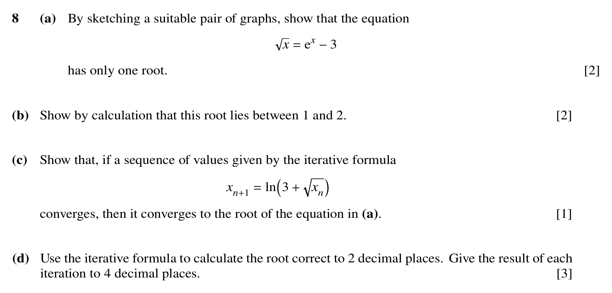
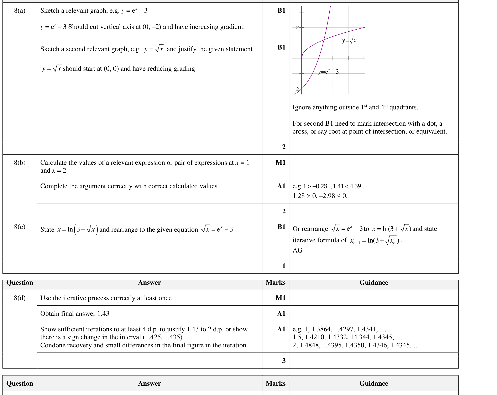

Paper 31autumn23 Q8
Numerical Solution of Equations
Self-marked exam work is useful practice evidence, but it is weaker than Checked Practice evidence. It does not award mastery by itself.

Hint
For the graph proof, name the two functions you would sketch; for the bracket, evaluate at x = 1 and x = 2.
Reveal Answer
